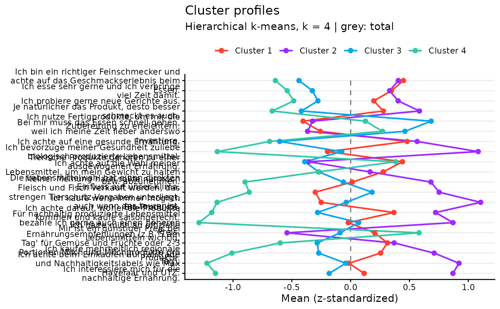
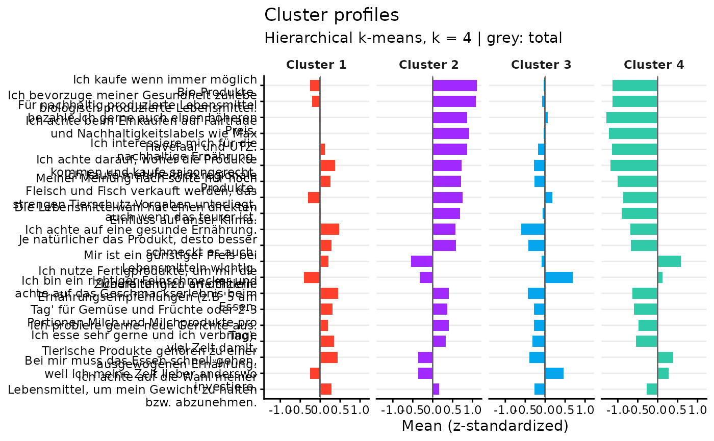
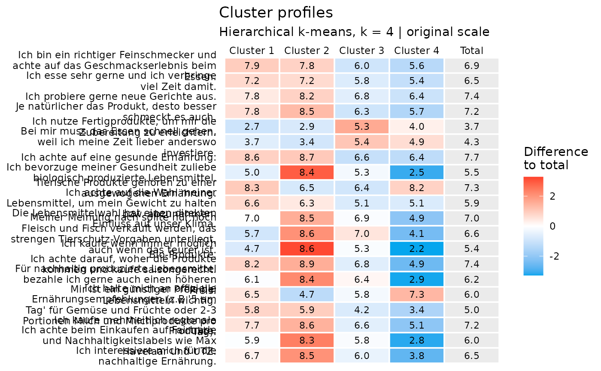

Plots the profiles of the clusters: the mean of each clustering variable per cluster (the centers of the solution), as profile lines, bars or a heatmap. This is the quickest overview of what characterizes each cluster and the basis for naming the clusters.
Arguments
- object
A
seg_clusterobject, e.g. fromseg_cluster().- type
Type of plot:
"lines"(default),"bars"or"heatmap", see "Details".- scale
Scale of the means:
"prepared"(default) for the prepared (e.g. z-standardized) clustering variables or"original"for the original variables, see "Details".- order
Order of the variables:
"data"(default) keeps the order of the clustering variables,"difference"sorts them by the difference between the clusters (range of the cluster means on the prepared scale), so that the variables that separate the clusters most come first.- total
Logical. Whether to show the total mean of all respondents (and a "Total" column in the heatmap). Defaults to
TRUE.- axis_labels
How to label the variables:
"label"(default) uses the variable labels (the names if missing),"name"the variable names,"both"the name followed by the label.- label_width
Number of characters after which the labels are wrapped. Defaults to 40.
NULLfor no wrapping.- digits
Number of decimals of the values in the heatmap. Defaults to 1.
Details
Types
"lines"(default): the classic profile ("snake") plot, with the clustering variables on the y-axis and one line per cluster. Best to compare all clusters in one chart."bars": one panel per cluster with the means as horizontal bars and the total mean as a grey mark. Best to see the highs and lows of each cluster when naming them."heatmap": clusters (columns) by variables (rows), with the means as numbers and the difference to the total mean as color (red = above, blue = below the total).
Scales
"prepared"(default): the means of the prepared clustering variables, i.e. the centers that the clustering is based on (object$centers). With z-standardized variables (seg_prep_data()withscale = "z"), the means are expressed in standard deviations from the total mean (0): following Cohen (1988), deviations of about 0.2, 0.5 and 0.8 can be regarded as small, medium and large."original": the means of the original clustering variables (e.g. on a 1-10 rating scale) of the respondents of each cluster, fromobject$data_full. Imputed values are not included. Easier to communicate, but variables with different scales or variances are less comparable.
The dashed grey line ("lines") or grey marks ("bars") show the total
mean of all respondents of the solution. For fuzzy and model-based
clustering, the means are computed for the respondents assigned to each
cluster (highest membership / probability). Noise (density-based methods)
is not shown, but included in the total.
For a detailed comparison of the clusters, with confidence intervals,
significance tests, survey weights and further profiling variables, see
eda_plot() and eda_explore().
References
Cohen, J. (1988). Statistical power analysis for the behavioral sciences (2nd ed.). Lawrence Erlbaum.
See also
Other clustering:
predict.seg_cluster(),
seg_agreement(),
seg_as_cluster(),
seg_cluster(),
seg_cluster_density(),
seg_cluster_fuzzy(),
seg_cluster_hierarchical(),
seg_cluster_hkmeans(),
seg_cluster_model(),
seg_cluster_partitioning(),
seg_dbscan_eps(),
seg_plot_cluster(),
seg_plot_dend(),
seg_plot_heatmap()
Examples
# \donttest{
prep <- seg_prep_data(
sm_synthetic,
vars = dplyr::starts_with("F50_0_"),
missing = "mice",
max_missing_prop = 0.2,
verbose = FALSE
)
cl <- seg_cluster(prep, k = 4, plots = FALSE, verbose = FALSE)
seg_plot_centers(cl)

seg_plot_centers(cl, type = "bars", order = "difference")

seg_plot_centers(cl, type = "heatmap", scale = "original")

# }